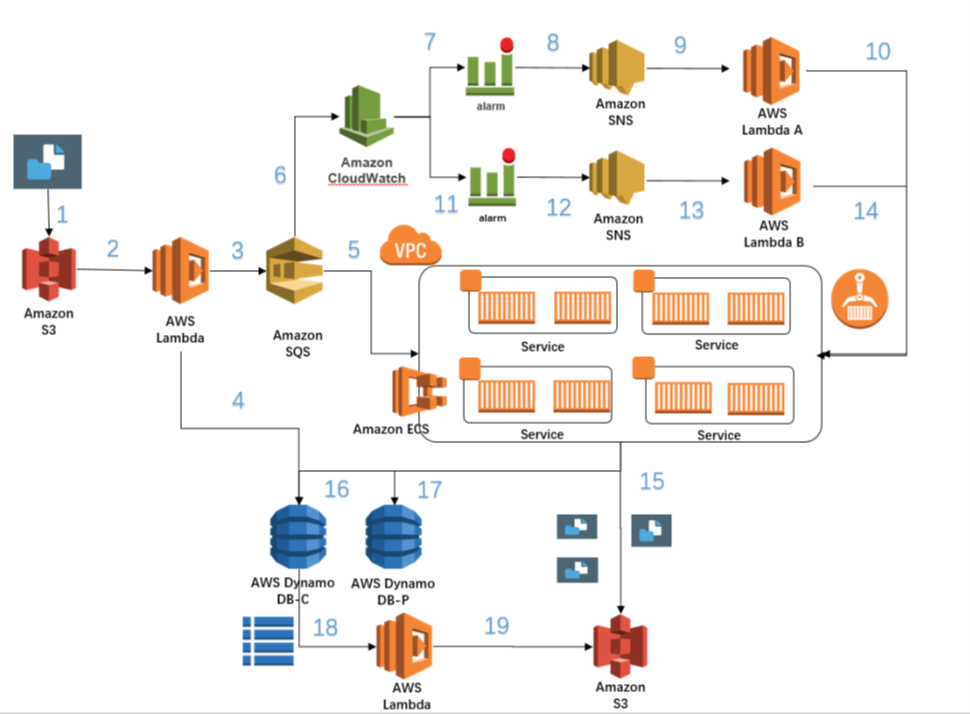

基于Amazon ECS的国内外文件同步系统解决方案
很多跨国企业都会有数据同步的需求，这些大型文件主要是存储在S3桶上，通过console或者命令行的形式从本地上传至S3中。本文描述了一种基于容器化的，在Amazon ECS平台上搭建的、快速同步的且基于负载进行扩容和收缩的、通用的解决方案。
解决方案概述
该方案如下图所示。  在该方案中，我们会启动以下资源：
- 一个global的S3桶：用于global作为数据传输的源
- 4个Lambda函数： 分别用于文件分片，容器的扩张与收缩，发送传输完成信号
- 1个sqs队列：用于存储传输所用参数
- 2个cloud watch警报： 监控sqs内消息数量，分别用于需要收缩和扩张容器
- 一个ECS集群，一个服务和若干个task：用于搭载容器
- 两个dynamoDB 表： T 和C。表T用于记录传输的uplaodID和分段，传输情况，表C用于记录每个片段的唯一标记值-etag。
- 具有相应的权限的角色。

在运行cloudformation之前需要您准备好： 国内：一个S3桶，用户的访问密钥 AccessId 和AccessKey 国外：一个VPC和其中的一个公有子网， EC2密钥对，用于接收信息的Email地址
步骤：
- 用户在global bucket中成功上传文件。
- 触发lambda函数。Lambda函数会判断新文件的大小判断用哪种方式传输，当小于5M的时候会选择直接进行下载上传，当大于5M的时候会进行分段上传。
- 当确定用哪种方式进行传输之后会把相应的信息存储至sqs中，包括文件名称，uploadID, 分段情况等。
- 同时Lambda会将传输情况备份至dynamoDB表C中,表1用于记载传输情况。
- 容器运行在ecs集群中， SQS内的信息被ecs中的servces和task消耗，
- 我们为SQS设定了cloudwatch监控，用于根据负载实现容器的扩张和缩小。
- 我们创建了警报A 用于判断是否需要根据情况扩张和缩小容器的数量，当sqs内消息数量较大时会触发警报A
- 警报A会触发发送消息给SNS
- SNS接到消息之后会触发LambdaA
- LambdaA会调整容器的数量到10个，实现容器的扩张
- 当sqs内消息数量较小时会触发警报B
- 警报B会触发发送消息给SNS
- SNS接到消息之后会触发LambdaB
- LambdaB会调整容器的数量到1个，实现容器的收缩
- 容器会将下载的片段传至国内S3桶。
- 容器更改dynamo DB表C中的数据，更新已完成的片段数量
- 容器更改dynamo DB 表P，插入新的数据存入etag和uplaod id partnumber等信息。
- 当表C中已完成的片段数量和公有片段数量一致的时候会触发Lambda函数
- 函数搜索同一个uploadID的所有的片段的etag 并按partnumber排序，发送给国内的S3桶。S3桶在核对所有的etag之后进行片段组装，出现在国内的S3桶上。
架构部署
- 登录 AWS 管理控制台并通过以下网址打开 AWS CloudFormation 控制台：https://console.aws.amazon.com/cloudformation。
- 如果这是新的 AWS CloudFormation 账户，请单击“Create New Stack”。否则，请单击“Create Stack”。
- 在模板部分，选择指定 Amazon S3 模板 URL
- 在 Specify Details 部分的 Name 字段中，输入堆栈名称。堆栈名中不得含有空格。
- 在 Specify Parameters (指定参数) 页上，您将看到模板的 Parameters 部分中的参数。 请按实际情况填写。
- 单击 Next (下一步)。
- 在这种情况下，我们不会添加任何标签。单击“Next”。作为密钥值对的标签可帮助您识别堆栈。
- 审查堆栈信息。如果满意该设置，则单击“Create ”。